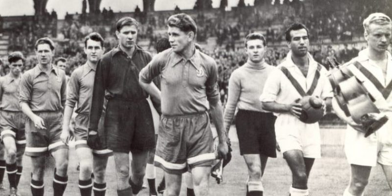
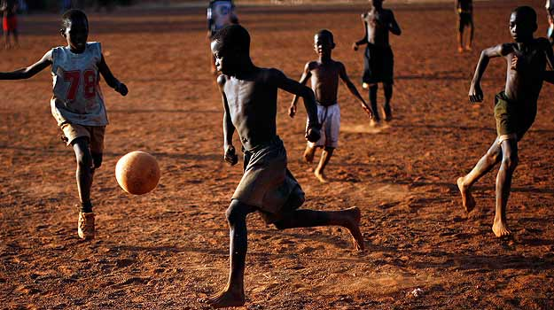
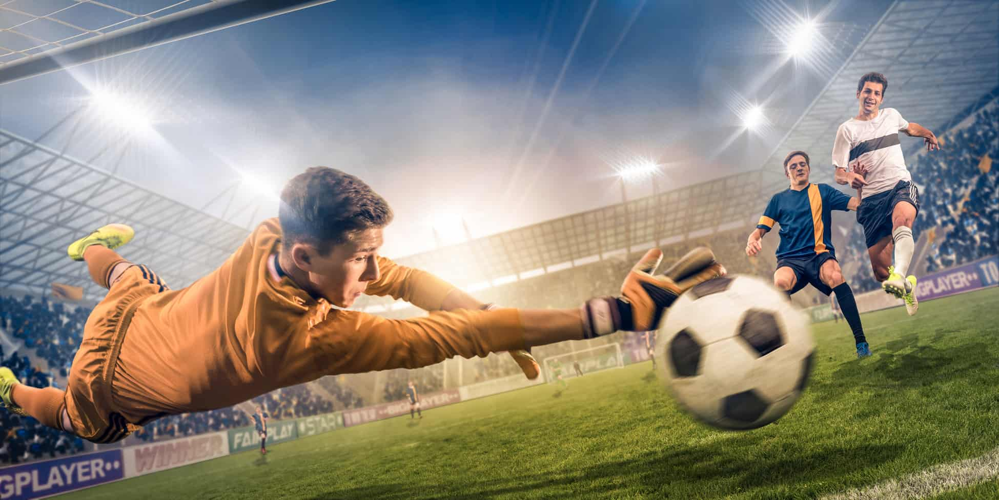

| Lo único que se necesita para jugar es una pelota y dos porterías que se pueden marcar en el suelo con tiza o cal; y para aquellos que lo deseen y se lo puedan permitir, prendas deportivas como camisetas, pantalones cortos, medias y botas de fútbol. Se puede jugar incluso con los pies descalzos. Aunque los efectos positivos del deporte y la actividad física se conocen desde hace ya largo tiempo, su aplicación a la promoción de la salud sexual y reproductiva (SSR) de los adolescentes sigue siendo limitada. Aparte de los impactos directos que tiene sobre el organismo (fortalecimiento del sistema cardiovascular, aumento de la masa muscular, mejoramiento del estado físico), el deporte contribuye al establecimiento de una relación positiva con el propio cuerpo y permite vivir experiencias de solidaridad y confianza que, a su vez, promueven la formación de una identidad. |  |
|  | Fútbol, deporte de equipo practicado por dos conjuntos de once jugadores con una pelota esférica. Es el que más se juega en el mundo y también el más popular entre los espectadores, con un seguimiento de millones de aficionados. En rigor, este deporte se debería llamar fútbol asociación, para distinguirlo de los otros deportes que también tienen el nombre de fútbol; por ello en Estados Unidos se le conoce como soccer. El fútbol asociación se distingue de otros tipos de fútbol en que se juega fundamentalmente con los pies y sólo el portero está autorizado a utilizar las manos cuando se encuentra dentro del área de portería. Otra característica propia es que el juego es continuo, teniendo que improvisar los jugadores sus tácticas durante el mismo, cambiando sus posiciones constantemente para recibir o interceptar pases. |
|  | El terreno de juego es rectangular de césped natural o artificial, con una portería o arco a cada lado del campo. Se juega mediante una pelota que se debe desplazar a través del campo con cualquier parte del cuerpo que no sean los brazos o las manos, y mayoritariamente con los pies (de ahí su nombre). El objetivo es introducirla dentro del arco contrario, acción que se denomina marcar un gol. El equipo que logre más goles al cabo del partido, de una duración de 90 minutos, es el que resulta ganador del encuentro. |
| Principal | Ligas Principales | Historia del Mundial | Historia del Futbol |